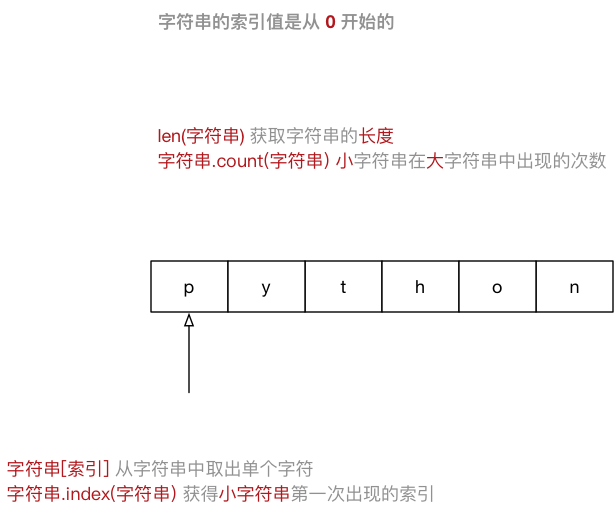

|
|HelloPython 程序Python 2.x 与 3.x 版本简介Python 程序的三种方式
python / python3ipythonPyCharmHelloPython 程序Python 的开发.py认识Python 目录认识Python 目录下新建 01-HelloPython.py 文件01-HelloPython.py 并且输入以下内容：python
print("hello python")
print("hello world")
01-HelloPython.pybash
$ python 01-HelloPython.py
python中我们学习的第一个 函数
BUG，是程序员在开发时非常常见的，初学者常见错误的原因包括：
每一个程序员都是在不断地修改错误中成长的
pirnt("Hello world") ``` NameError: name 'pirnt' is not defined
名称错误：'pirnt' 名字没有定义 ```
print 写在一行``` SyntaxError: invalid syntax
语法错误：语法无效 ```
每行代码负责完成一个动作
``` IndentationError: unexpected indent
缩进错误：不期望出现的缩进 ```
- Python 是一个格式非常严格的程序设计语言
- 目前而言，大家记住每行代码前面都不要增加空格
目前市场上有两个 Python 的版本并存着，分别是 Python 2.x 和 Python 3.x
``` SyntaxError: Non-ASCII character '\xe4' in file 01-HelloPython.py on line 3, but no encoding declared; see http://python.org/dev/peps/pep-0263/ for details
语法错误： 在 01-HelloPython.py 中第 3 行出现了非 ASCII 字符 '\xe4'，但是没有声明文件编码 请访问 http://python.org/dev/peps/pep-0263/ 了解详细信息 ```
ASCII字符只包含256个字符，不支持中文- 有关字符编码的问题，后续会讲
* error 错误
* name 名字
* defined 已经定义
* syntax 语法
* invalid 无效
* Indentation 索引
* unexpected 意外的，不期望的
* character 字符
* line 行
* encoding 编码
* declared 声明
* details 细节，详细信息
* ASCII 一种字符编码
Python 2.x 与 3.x 版本简介目前市场上有两个 Python 的版本并存着，分别是 Python 2.x 和 Python 3.x
新的 Python 程序建议使用
Python 3.0版本的语法
Python 的早期版本，这是一个 较大的升级Python 3.0 在设计的时候 没有考虑向下兼容
Python 版本设计的程序都无法在 Python 3.0 上正常执行Python 2.x 的语法和库Python 3.0 的迁移，允许使用部分 Python 3.0 的语法与函数Python 2.7 被确定为 最后一个Python 2.x 版本提示：如果开发时，无法立即使用 Python 3.0（还有极少的第三方库不支持 3.0 的语法），建议
- 先使用
Python 3.0版本进行开发- 然后使用
Python 2.6、Python 2.7来执行，并且做一些兼容性的处理
python / python3```bash
$ python xxx.py
$ python3 xxx.py ```
Python 的解释器 如今有多个语言的实现，包括：
CPython —— 官方版本的 C 语言实现Jython —— 可以运行在 Java 平台IronPython —— 可以运行在 .NET 和 Mono 平台PyPy —— Python 实现的，支持 JIT 即时编译Shell 中直接输入 Python 的代码，会立即看到程序执行结果exit()```python
exit() ```
在 python 解释器中，按热键 ctrl + d 可以退出解释器
python shell 好用得多
bash shell 命令Python 3.x 使用的解释器是 ipython3
要退出解释器可以有以下两种方式：
exitpython
In [1]: exit
在 IPython 解释器中，按热键 ctrl + d，IPython 会询问是否退出解释器
bash
$ sudo apt install ipython
使用用自己熟悉的语言，在程序中对某些代码进行标注说明，增强程序的可读性
以 # 开头，# 右边的所有东西都被当做说明文字，而不是真正要执行的程序，只起到辅助说明作用
示例代码如下：
```python
print("hello python") ```
为了保证代码的可读性，
#后面建议先添加一个空格，然后再编写相应的说明文字
# 在代码的后面（旁边）增加说明性的文字但是，需要注意的是，为了保证代码的可读性，注释和代码之间 至少要有 两个空格
示例代码如下：
python
print("hello python") # 输出 `hello python`
要在 Python 程序中使用多行注释，可以用 一对 连续的 三个 引号(单引号和双引号都可以)
示例代码如下：
```python """ 这是一个多行注释
在多行注释之间，可以写很多很多的内容…… """ print("hello python") ```
在一些正规的开发团队，通常会有 代码审核 的惯例，就是一个团队中彼此阅读对方的代码
Python 官方提供有一系列 PEP（Python Enhancement Proposals） 文档任何语言的程序员，编写出符合规范的代码，是开始程序生涯的第一步
计算机，顾名思义就是负责进行 数学计算 并且 存储计算结果 的电子设备
| 运算符| 描述 | 实例 | | :---: | :---: | --- | | + | 加 | 10 + 20 = 30 | | - | 减 | 10 - 20 = -10 | | * | 乘 | 10 * 20 = 200 | | / | 除 | 10 / 20 = 0.5 | | // | 取整除 | 返回除法的整数部分（商） 9 // 2 输出结果 4 | | % | 取余数 | 返回除法的余数 9 % 2 = 1 | | ** | 幂 | 又称次方、乘方，2 ** 3 = 8 |
* 运算符还可以用于字符串，计算结果就是字符串重复指定次数的结果python
In [1]: "-" * 50
Out[1]: '----------------------------------------'
和数学中的运算符的优先级一致，在 Python 中进行数学计算时，同样也是：
() 调整计算的优先级以下表格的算数优先级由高到最低顺序排列
| 运算符 | 描述 | | --- | --- | | ** | 幂 (最高优先级) | | * / % // | 乘、除、取余数、取整除 | | + - | 加法、减法 |
2 + 3 * 5 = 17(2 + 3) * 5 = 252 * 3 + 5 = 112 * (3 + 5) = 16计算机中包含有较多的硬件，但是一个程序要运行，有 三个 核心的硬件，分别是：
| CPU | 内存 | 硬盘 | | :---: | :---: | :---: |
4G / 8G / 16G / 32G程序要执行，首先要被加载到内存
```bash
$ which python
$ ls -lh /usr/bin/python
$ ls -lh /usr/bin/python2.7 ```
提示：建立 软链接 的目的，是为了方便使用者不用记住使用的解释器是 哪一个具体版本
程序就是 用来处理数据 的！
在 QQ 这个程序将 QQ 号码 和 QQ 密码 发送给服务器之前，是否需要先存储一下 QQ 号码 和 密码?
答案
肯定需要！—— 否则 QQ 这个程序就不知道把什么内容发送给服务器了！
QQ 这个程序把 QQ 号码 和 QQ 密码 保存在哪里？
答案
保存在 内存 中，因为 QQ 程序自己就在内存中
QQ 这个程序是怎么保存用户的 QQ 号码 和 QQ 密码 的？
答案
- 在程序内部，为 QQ 号码 和 QQ 密码 在内存中分配的空间就叫做 变量
- 程序就是用来处理数据的，而变量就是用来存储数据的
程序就是用来处理数据的，而变量就是用来存储数据的
= 左边是一个变量名= 右边是存储在变量中的值python
变量名 = 值
变量定义之后，后续就可以直接使用了
```python
In [1]: qq_number = "1234567"
In [2]: qq_number Out[2]: '1234567'
In [3]: qq_password = "123"
In [4]: qq_password Out[4]: '123' ```
使用交互式方式，如果要查看变量内容，直接输入变量名即可，不需要使用
```python
qq_number = "1234567"
qq_password = "123"
print(qqnumber) print(qqpassword) ```
使用解释器执行，如果要输出变量的内容，必须要要使用
- 可以用 其他变量的计算结果 来定义变量
- 变量定义之后，后续就可以直接使用了
需求
```python
price = 8.5
weight = 7.5
money = price * weight
print(money) ```
```python
price = 8.5
weight = 7.5
money = price * weight
money = money - 5 print(money) ```
提问
price／weight／moneymoney = money - 5 是在定义新的变量还是在使用变量？
需求
利用 单步调试 确认变量中保存数据的类型
提问
str —— 字符串bool —— 布尔（真假）int —— 整数float —— 浮点数（小数）Python 中定义变量时需要指定类型吗？
Python 可以根据 = 等号右侧的值，自动推导出变量中存储数据的类型Python 中定义变量是 不需要指定类型（在其他很多高级语言中都需要）int)float）bool）
True 非 0 数 —— 非零即真False 0complex)
提示：在 Python 2.x 中，整数 根据保存数值的长度还分为： *
int（整数） *long（长整数）
type 函数可以查看一个变量的类型python
In [1]: type(name)
bool 型，在计算时
True 对应的数字是 1False 对应的数字是 0演练步骤
i = 10f = 10.5定义布尔型 b = True
在 iPython 中，使用上述三个变量相互进行算术运算
+ 拼接字符串+ 拼接生成新的字符串```python In [1]: first_name = "三"
In [2]: last_name = "张"
In [3]: firstname + lastname Out[3]: '三张' ```
* 重复拼接相同的字符串python
In [1]: "-" * 50
Out[1]: '--------------------------------------------------'
```python In [1]: first_name = "zhang"
In [2]: x = 10
TypeError: unsupported operand type(s) for +: 'int' and 'str'
类型错误：+ 不支持的操作类型：int 和 str
```
input 函数| 函数 | 说明 | | --- | --- | | print(x) | 将 x 输出到控制台 | | type(x) | 查看 x 的变量类型 |
input 函数从键盘等待用户的输入python
字符串变量 = input("提示信息：")
| 函数 | 说明 | | --- | --- | | int(x) | 将 x 转换为一个整数 | | float(x) | 将 x 转换到一个浮点数 |
需求
```python
price_str = input("请输入苹果价格：")
weight_str = input("请输入苹果重量：")
price = float(price_str)
weight = float(weight_str)
money = price * weight
print(money) ```
提问
price_str 记录用户输入的价格字符串price 记录转换后的价格数值float 函数进行转换python
price = float(input("请输入价格:"))
改进后的好处：
节约空间，只需要为一个变量分配空间
起名字方便，不需要为中间变量起名字
改进后的“缺点”：
初学者需要知道，两个函数能够嵌套使用，稍微有一些难度
提示
苹果单价
9.00元／斤，购买了5.00斤，需要支付45.00元
print 函数将信息输出到控制台% 被称为 格式化操作符，专门用于处理字符串中的格式
% 的字符串，被称为 格式化字符串% 和不同的 字符 连用，不同类型的数据 需要使用 不同的格式化字符| 格式化字符 | 含义 |
| --- | --- |
| %s | 字符串 |
| %d | 有符号十进制整数，%06d 表示输出的整数显示位数，不足的地方使用 0 补全 |
| %f | 浮点数，%.2f 表示小数点后只显示两位 |
| %% | 输出 % |
```python print("格式化字符串" % 变量1)
print("格式化字符串" % (变量1, 变量2...)) ```
需求
name，输出 我的名字叫 小明，请多多关照！student_no，输出 我的学号是 000001price、weight、money，输出 苹果单价 9.00 元／斤，购买了 5.00 斤，需要支付 45.00 元scale，输出 数据比例是 10.00%python
print("我的名字叫 %s，请多多关照！" % name)
print("我的学号是 %06d" % student_no)
print("苹果单价 %.02f 元／斤，购买 %.02f 斤，需要支付 %.02f 元" % (price, weight, money))
print("数据比例是 %.02f%%" % (scale * 100))
需求
```
公司名称
姓名 (职位)
电话：电话 邮箱：邮箱
```
实现代码如下：
```python """ 在控制台依次提示用户输入：姓名、公司、职位、电话、电子邮箱 """ name = input("请输入姓名：") company = input("请输入公司：") title = input("请输入职位：") phone = input("请输入电话：") email = input("请输入邮箱：")
print("" * 50) print(company) print() print("%s (%s)" % (name, title)) print() print("电话：%s" % phone) print("邮箱：%s" % email) print("" * 50)
```
标示符就是程序员定义的 变量名、函数名
名字 需要有 见名知义 的效果，见下图：
思考：下面的标示符哪些是正确的，哪些不正确为什么？
fromNo12
from#12
my_Boolean
my-Boolean
Obj2
2ndObj
myInt
My_tExt
_test
test!32
haha(da)tt
jack_rose
jack&rose
GUI
G.U.I
Python 内部已经使用的标识符通过以下命令可以查看 Python 中的关键字
python
In [1]: import keyword
In [2]: print(keyword.kwlist)
提示：关键字的学习及使用，会在后面的课程中不断介绍
import关键字 可以导入一个 “工具包”在
Python中不同的工具包，提供有不同的工具
命名规则 可以被视为一种 惯例，并无绝对与强制 目的是为了 增加代码的识别和可读性
注意 Python 中的 标识符 是 区分大小写的
= 的左右应该各保留一个空格Python 中，如果 变量名 需要由 二个 或 多个单词 组成时，可以按照以下方式命名
_下划线 连接first_name、last_name、qq_number、qq_passwordfirstName、lastNameFirstName、LastName、CamelCase 生活中的判断几乎是无所不在的，我们每天都在做各种各样的选择，如果这样？如果那样？……
```python if 今天发工资:
先还信用卡的钱
if 有剩余:
又可以happy了，O(∩_∩)O哈哈~
else:
噢，no。。。还的等30天
else:
盼着发工资
```
正是因为有了判断，才使得程序世界丰富多彩，充满变化！
判断语句 又被称为 “分支语句”，正是因为有了判断，才让程序有了很多的分支
在 Python 中，if 语句 就是用来进行判断的，格式如下：
python
if 要判断的条件:
条件成立时，要做的事情
……
注意：代码的缩进为一个
tab键，或者 4 个空格 —— 建议使用空格
- 在 Python 开发中，Tab 和空格不要混用！
我们可以把整个 if 语句看成一个完整的代码块
需求
```python
age = 18
if age >= 18: print("可以进网吧嗨皮……")
print("这句代码什么时候执行?") ```
注意：
if 语句以及缩进部分是一个 完整的代码块思考
在使用 if 判断时，只能做到满足条件时要做的事情。那如果需要在 不满足条件的时候，做某些事情，该如何做呢？
答案
else，格式如下：
python
if 要判断的条件:
条件成立时，要做的事情
……
else:
条件不成立时，要做的事情
……
注意：
if 和 else 语句以及各自的缩进部分共同是一个 完整的代码块需求
```python
age = int(input("今年多大了？"))
if age >= 18: print("可以进网吧嗨皮……") else: print("你还没长大，应该回家写作业！")
print("这句代码什么时候执行?") ```
and条件1 and 条件2
TrueFalse| 条件 1 | 条件 2 | 结果 | | :---: | :---: | :---: | | 成立 | 成立 | 成立 | | 成立 | 不成立 | 不成立 | | 不成立 | 成立 | 不成立 | | 不成立 | 不成立 | 不成立 |
or条件1 or 条件2
TrueFalse| 条件 1 | 条件 2 | 结果 | | :---: | :---: | :---: | | 成立 | 成立 | 成立 | | 成立 | 不成立 | 成立 | | 不成立 | 成立 | 成立 | | 不成立 | 不成立 | 不成立 |
notnot 条件
| 条件 | 结果 | | :---: | :---: | | 成立 | 不成立 | | 不成立 | 成立 |
age，编写代码判断年龄是否正确
python_score、c_score，编写代码判断成绩
is_employee，编写代码判断是否是本公司员工
答案 1：
```python
age = 100
if age >= 0 and age <= 120: print("年龄正确") else: print("年龄不正确")
```
答案 2：
```python
pythonscore = 50 cscore = 50
if pythonscore > 60 or cscore > 60: print("考试通过") else: print("再接再厉！") ```
答案 3：
```python
is_employee，编写代码判断是否是本公司员工is_employee = True
if not is_employee: print("非公勿内") ```
elifif 可以 判断条件else 可以处理 条件不成立 的情况elif python
if 条件1:
条件1满足执行的代码
……
elif 条件2:
条件2满足时，执行的代码
……
elif 条件3:
条件3满足时，执行的代码
……
else:
以上条件都不满足时，执行的代码
……
python
if 条件1 and 条件2:
条件1满足 并且 条件2满足 执行的代码
……
注意
elif 和 else 都必须和 if 联合使用，而不能单独使用if、elif 和 else 以及各自缩进的代码，看成一个 完整的代码块需求
holiday_name 字符串变量记录节日名称``` holiday_name = "平安夜"
if holidayname == "情人节": print("买玫瑰") print("看电影") elif holidayname == "平安夜": print("买苹果") print("吃大餐") elif holiday_name == "生日": print("买蛋糕") else: print("每天都是节日啊……")
```
if 的嵌套elif 的应用场景是：同时 判断 多个条件，所有的条件是 平级 的
if 进行条件判断，如果希望 在条件成立的执行语句中 再 增加条件判断，就可以使用 if 的嵌套```python if 条件 1: 条件 1 满足执行的代码 ……
if 条件 1 基础上的条件 2:
条件 2 满足时，执行的代码
……
# 条件 2 不满足的处理
else:
条件 2 不满足时，执行的代码
else: 条件1 不满足时，执行的代码 …… ```
需求
has_ticket 表示是否有车票knife_length 表示刀的长度，单位：厘米```python
has_ticket = True
knife_length = 20
if has_ticket: print("有车票，可以开始安检...")
# 安检时，需要检查刀的长度，判断是否超过 20 厘米
# 如果超过 20 厘米，提示刀的长度，不允许上车
if knife_length >= 20:
print("不允许携带 %d 厘米长的刀上车" % knife_length)
# 如果不超过 20 厘米，安检通过
else:
print("安检通过，祝您旅途愉快……")
else: print("大哥，您要先买票啊")
```
目标
import 导入模块（“工具包”）的使用需求
| 序号 | 规则 | | :---: | :---: | | 1 | 石头 胜 剪刀 | | 2 | 剪刀 胜 布 | | 3 | 布 胜 石头 |
```python
player = int(input("请出拳 石头（1）／剪刀（2）／布（3）："))
computer = 1
if ((player == 1 and computer == 2) or (player == 2 and computer == 3) or (player == 3 and computer == 1)):
print("噢耶！！！电脑弱爆了！！！")
elif player == computer: print("心有灵犀，再来一盘！") else: print("不行，我要和你决战到天亮！")
```
Python 中，要使用随机数，首先需要导入 随机数 的 模块 —— “工具包”python
import random
导入模块后，可以直接在 模块名称 后面敲一个 . 然后按 Tab 键，会提示该模块中包含的所有函数
random.randint(a, b) ，返回 [a, b] 之间的整数，包含 a 和 b
python
random.randint(12, 20) # 生成的随机数n: 12 <= n <= 20
random.randint(20, 20) # 结果永远是 20
random.randint(20, 10) # 该语句是错误的，下限必须小于上限
数学符号表链接：https://zh.wikipedia.org/wiki/数学符号表
| 运算符| 描述 | 实例 | | :---: | :---: | --- | | + | 加 | 10 + 20 = 30 | | - | 减 | 10 - 20 = -10 | | * | 乘 | 10 * 20 = 200 | | / | 除 | 10 / 20 = 0.5 | | // | 取整除 | 返回除法的整数部分（商） 9 // 2 输出结果 4 | | % | 取余数 | 返回除法的余数 9 % 2 = 1 | | ** | 幂 | 又称次方、乘方，2 ** 3 = 8 |
* 运算符还可以用于字符串，计算结果就是字符串重复指定次数的结果python
In [1]: "-" * 50
Out[1]: '----------------------------------------'
| 运算符 | 描述 | | --- | --- | | == | 检查两个操作数的值是否 相等，如果是，则条件成立，返回 True | | != | 检查两个操作数的值是否 不相等，如果是，则条件成立，返回 True | | > | 检查左操作数的值是否 大于 右操作数的值，如果是，则条件成立，返回 True | | < | 检查左操作数的值是否 小于 右操作数的值，如果是，则条件成立，返回 True | | >= | 检查左操作数的值是否 大于或等于 右操作数的值，如果是，则条件成立，返回 True | | <= | 检查左操作数的值是否 小于或等于 右操作数的值，如果是，则条件成立，返回 True |
Python 2.x 中判断 不等于 还可以使用
<>运算符
!=在 Python 2.x 中同样可以用来判断 不等于
| 运算符 | 逻辑表达式 | 描述 |
| --- | --- | --- |
| and | x and y | 只有 x 和 y 的值都为 True，才会返回 True
否则只要 x 或者 y 有一个值为 False，就返回 False |
| or | x or y | 只要 x 或者 y 有一个值为 True，就返回 True
只有 x 和 y 的值都为 False，才会返回 False |
| not | not x | 如果 x 为 True，返回 False
如果 x 为 False，返回 True |
= 可以给变量赋值Python 还提供了一系列的 与 算术运算符 对应的 赋值运算符| 运算符 | 描述 | 实例 | | --- | --- | --- | | = | 简单的赋值运算符 | c = a + b 将 a + b 的运算结果赋值为 c | | += | 加法赋值运算符 | c += a 等效于 c = c + a | | -= | 减法赋值运算符 | c -= a 等效于 c = c - a | | *= | 乘法赋值运算符 | c *= a 等效于 c = c * a | | /= | 除法赋值运算符 | c /= a 等效于 c = c / a | | //= | 取整除赋值运算符 | c //= a 等效于 c = c // a | | %= | 取 模 (余数)赋值运算符 | c %= a 等效于 c = c % a | | **= | 幂赋值运算符 | c **= a 等效于 c = c ** a |
| 运算符 | 描述 | | --- | --- | | ** | 幂 (最高优先级) | | * / % // | 乘、除、取余数、取整除 | | + - | 加法、减法 | | <= < > >= | 比较运算符 | | == != | 等于运算符 | | = %= /= //= -= += *= **= | 赋值运算符 | | not or and | 逻辑运算符 |
在程序开发中，一共有三种流程方式：
while 循环基本使用while 循环最常用的应用场景就是 让执行的代码 按照 指定的次数 重复 执行
需求 —— 打印 5 遍 Hello Python
while 语句基本语法```python 初始条件设置 —— 通常是重复执行的 计数器
while 条件(判断 计数器 是否达到 目标次数): 条件满足时，做的事情1 条件满足时，做的事情2 条件满足时，做的事情3 ...(省略)...
处理条件(计数器 + 1)
```
注意：
while 语句以及缩进部分是一个 完整的代码块需求
```while
i = 1
while i <= 5: # 要重复执行的代码 print("Hello Python")
# 处理计数器 i
i = i + 1
print("循环结束后的 i = %d" % i) ```
注意：循环结束后，之前定义的计数器条件的数值是依旧存在的
由于程序员的原因，忘记 在循环内部 修改循环的判断条件，导致循环持续执行，程序无法终止！
= 可以给变量赋值Python 还提供了一系列的 与 算术运算符 对应的 赋值运算符| 运算符 | 描述 | 实例 | | --- | --- | --- | | = | 简单的赋值运算符 | c = a + b 将 a + b 的运算结果赋值为 c | | += | 加法赋值运算符 | c += a 等效于 c = c + a | | -= | 减法赋值运算符 | c -= a 等效于 c = c - a | | *= | 乘法赋值运算符 | c *= a 等效于 c = c * a | | /= | 除法赋值运算符 | c /= a 等效于 c = c / a | | //= | 取整除赋值运算符 | c //= a 等效于 c = c // a | | %= | 取 模 (余数)赋值运算符 | c %= a 等效于 c = c % a | | **= | 幂赋值运算符 | c **= a 等效于 c = c ** a |
常见的计数方法有两种，可以分别称为：
1 开始）—— 更符合人类的习惯0 开始）—— 几乎所有的程序语言都选择从 0 开始计数因此，大家在编写程序时，应该尽量养成习惯：除非需求的特殊要求，否则 循环 的计数都从 0 开始
在程序开发中，通常会遇到 利用循环 重复计算 的需求
遇到这种需求，可以：
while 上方定义一个变量，用于 存放最终计算结果需求
```python
result = 0
i = 0
while i <= 100: print(i)
# 每一次循环，都让 result 这个变量和 i 这个计数器相加
result += i
# 处理计数器
i += 1
print("0~100之间的数字求和结果 = %d" % result)
```
开发步骤
```python
result = 0
i = 0
while i <= 100:
# 判断偶数
if i % 2 == 0:
print(i)
result += i
# 处理计数器
i += 1
print("0~100之间偶数求和结果 = %d" % result)
```
break和continue是专门在循环中使用的关键字
break 某一条件满足时，退出循环，不再执行后续重复的代码continue 某一条件满足时，不执行后续重复的代码
break和continue只针对 当前所在循环 有效
break 退出循环```python i = 0
while i < 10:
# break 某一条件满足时，退出循环，不再执行后续重复的代码
# i == 3
if i == 3:
break
print(i)
i += 1
print("over") ```
break只针对当前所在循环有效
continue```python i = 0
while i < 10:
# 当 i == 7 时，不希望执行需要重复执行的代码
if i == 7:
# 在使用 continue 之前，同样应该修改计数器
# 否则会出现死循环
i += 1
continue
# 重复执行的代码
print(i)
i += 1
```
continue 时，条件处理部分的代码，需要特别注意，不小心会出现 死循环
continue只针对当前所在循环有效
while 循环嵌套while 嵌套就是：while 里面还有 while```python while 条件 1: 条件满足时，做的事情1 条件满足时，做的事情2 条件满足时，做的事情3 ...(省略)...
while 条件 2:
条件满足时，做的事情1
条件满足时，做的事情2
条件满足时，做的事情3
...(省略)...
处理条件 2
处理条件 1
```
需求
*，每一行星号的数量依次递增``` * **
```
```python
row = 1
while row <= 5:
print("*" * row)
row += 1
```
知识点 对 print 函数的使用做一个增强
print 函数输出内容之后，会自动在内容末尾增加换行print 函数输出内容的后面增加 , end=""其中 "" 中间可以指定 print 函数输出内容之后，继续希望显示的内容
语法格式如下：
```python
print("*", end="")
print("") ```
end=""表示向控制台输出内容结束之后，不会换行
假设 Python 没有提供 字符串的 * 操作 拼接字符串
需求
*，每一行星号的数量依次递增``` * **
```
开发步骤
* 应该如何处理？
列 的星星显示
```python row = 1
while row <= 5:
# 假设 python 没有提供字符串 * 操作
# 在循环内部，再增加一个循环，实现每一行的 星星 打印
col = 1
while col <= row:
print("*", end="")
col += 1
# 每一行星号输出完成后，再增加一个换行
print("")
row += 1
```
需求 输出 九九乘法表，格式如下：
``` 1 * 1 = 1 1 * 2 = 2 2 * 2 = 4 1 * 3 = 3 2 * 3 = 6 3 * 3 = 9 1 * 4 = 4 2 * 4 = 8 3 * 4 = 12 4 * 4 = 16 1 * 5 = 5 2 * 5 = 10 3 * 5 = 15 4 * 5 = 20 5 * 5 = 25 1 * 6 = 6 2 * 6 = 12 3 * 6 = 18 4 * 6 = 24 5 * 6 = 30 6 * 6 = 36 1 * 7 = 7 2 * 7 = 14 3 * 7 = 21 4 * 7 = 28 5 * 7 = 35 6 * 7 = 42 7 * 7 = 49 1 * 8 = 8 2 * 8 = 16 3 * 8 = 24 4 * 8 = 32 5 * 8 = 40 6 * 8 = 48 7 * 8 = 56 8 * 8 = 64 1 * 9 = 9 2 * 9 = 18 3 * 9 = 27 4 * 9 = 36 5 * 9 = 45 6 * 9 = 54 7 * 9 = 63 8 * 9 = 72 9 * 9 = 81
```
开发步骤
``` * **
```
* 替换成对应的行与列相乘```python
row = 1
while row <= 9: # 定义起始列 col = 1
# 最大打印 row 列
while col <= row:
# end = ""，表示输出结束后，不换行
# "\t" 可以在控制台输出一个制表符，协助在输出文本时对齐
print("%d * %d = %d" % (col, row, row * col), end="\t")
# 列数 + 1
col += 1
# 一行打印完成的换行
print("")
# 行数 + 1
row += 1
```
字符串中的转义字符
\t 在控制台输出一个 制表符，协助在输出文本时 垂直方向 保持对齐\n 在控制台输出一个 换行符制表符 的功能是在不使用表格的情况下在 垂直方向 按列对齐文本
| 转义字符 | 描述 | | --- | --- | | \\ | 反斜杠符号 | | \' | 单引号 | | \" | 双引号 | | \n | 换行 | | \t | 横向制表符 | | \r | 回车 |
演练步骤
04_函数 项目multiple_table():import 导入并且调用函数定义函数的格式如下：
```python def 函数名():
函数封装的代码
……
```
def 是英文 define 的缩写调用函数很简单的，通过 函数名() 即可完成对函数的调用
需求
say_hello 的函数，封装三行打招呼的代码```python name = "小明"
def say_hello(): print("hello 1") print("hello 2") print("hello 3")
print(name)
say_hello()
print(name)
```
用 单步执行 F8 和 F7 观察以下代码的执行过程
能否将 函数调用 放在 函数定义 的上方？
Python 已经知道函数的存在NameError: name 'say_hello' is not defined (名称错误：say_hello 这个名字没有被定义)CTRL + Q 可以查看函数的说明信息注意：因为 函数体相对比较独立，函数定义的上方，应该和其他代码（包括注释）保留 两个空行
演练需求
sum_2_num 的函数演练代码如下：
```python def sum2num():
num1 = 10
num2 = 20
result = num1 + num2
print("%d + %d = %d" % (num1, num2, result))
sum2num()
```
思考一下存在什么问题
函数只能处理 固定数值 的相加
如何解决？
, 分隔```python def sum2num(num1, num2):
result = num1 + num2
print("%d + %d = %d" % (num1, num2, result))
sum2num(50, 20)
```
return 关键字可以返回结果注意：
return表示返回，后续的代码都不会被执行
```python def sum2num(num1, num2): """对两个数字的求和"""
return num1 + num2
result = sum2num(10, 20)
print("计算结果是 %d" % result)
```
test2 中，调用了另外一个函数 test1
test1 函数时，会先把函数 test1 中的任务都执行完test2 中调用函数 test1 的位置，继续执行后续的代码```python def test1():
print("*" * 50)
print("test 1")
print("*" * 50)
def test2():
print("-" * 50)
print("test 2")
test1()
print("-" * 50)
test2()
```
体会一下工作中 需求是多变 的
需求 1
print_line 函数能够打印 * 组成的 一条分隔线```python def print_line(char):
print("*" * 50)
```
需求 2
```python def print_line(char):
print(char * 50)
```
需求 3
```python def print_line(char, times):
print(char * times)
```
需求 4
提示：工作中针对需求的变化，应该冷静思考，不要轻易修改之前已经完成的，能够正常执行的函数！
```python def print_line(char, times):
print(char * times)
def print_lines(char, times):
row = 0
while row < 5:
print_line(char, times)
row += 1
```
模块是 Python 程序架构的一个核心概念
py 结尾的 Python 源代码文件都是一个 模块步骤
hm_10_分隔线模块.py
hm_09_打印多条分隔线.py 中的内容，最后一行 print 代码除外python
name = "黑马程序员"
hm_10_体验模块.py 文件，并且编写以下代码：```python import hm10分隔线模块
hm10分隔线模块.print_line("-", 80) print(hm10分隔线模块.name) ```
import 导入这个模块模块名.变量 / 模块名.函数 的方式，使用这个模块中定义的变量或者函数模块可以让 曾经编写过的代码 方便的被 复用！
注意：如果在给 Python 文件起名时，以数字开头 是无法在
PyCharm中通过导入这个模块的
C是compiled编译过 的意思
操作步骤
__pycache__ 的目录hm_10_分隔线模块.cpython-35.pyc 文件，cpython-35 表示 Python 解释器的版本pyc 文件是由 Python 解释器将 模块的源码 转换为 字节码
Python 这样保存 字节码 是作为一种启动 速度的优化字节码
Python 在解释源程序时是分成两个步骤的
有了模块的字节码文件之后，下一次运行程序时，如果在 上次保存字节码之后 没有修改过源代码，Python 将会加载 .pyc 文件并跳过编译这个步骤
Python 重编译时，它会自动检查源文件和字节码文件的时间戳提示：有关模块以及模块的其他导入方式，后续课程还会逐渐展开！
模块是 Python 程序架构的一个核心概念
int)float）bool）
True 非 0 数 —— 非零即真False 0complex)
非数字型
在 Python 中，所有 非数字型变量 都支持以下特点：
sequence，也可以理解为 容器[]for in+ 和 重复 *List（列表） 是 Python 中使用 最频繁 的数据类型，在其他语言中通常叫做 数组[] 定义，数据 之间使用 , 分隔0 开始
注意：从列表中取值时，如果 超出索引范围，程序会报错
python
name_list = ["zhangsan", "lisi", "wangwu"]
ipython3 中定义一个 列表，例如：name_list = []name_list. 按下 TAB 键，ipython 会提示 列表 能够使用的 方法 如下：In [1]: name_list.
name_list.append name_list.count name_list.insert name_list.reverse
name_list.clear name_list.extend name_list.pop name_list.sort
name_list.copy name_list.index name_list.remove
| 序号 | 分类 | 关键字 / 函数 / 方法 | 说明 | | --- | --- | --- | --- | | 1 | 增加 | 列表.insert(索引, 数据) | 在指定位置插入数据 | | | | 列表.append(数据) | 在末尾追加数据 | | | 列表.extend(列表2) | 将列表2 的数据追加到列表 | | 2 | 修改 | 列表[索引] = 数据 | 修改指定索引的数据 | | 3 | 删除 | del 列表[索引] | 删除指定索引的数据 | | | | 列表.remove[数据] | 删除第一个出现的指定数据 | | | | 列表.pop | 删除末尾数据 | | | | 列表.pop(索引) | 删除指定索引数据 | | | | 列表.clear | 清空列表 | | 4 | 统计 | len(列表) | 列表长度 | | | | 列表.count(数据) | 数据在列表中出现的次数 | | 5 | 排序 | 列表.sort() | 升序排序 | | | | 列表.sort(reverse=True) | 降序排序 | | | | 列表.reverse() | 逆序、反转 |
del 关键字(delete) 同样可以删除列表中元素del 关键字本质上是用来 将一个变量从内存中删除的del 关键字将变量从内存中删除，后续的代码就不能再使用这个变量了python
del name_list[1]
在日常开发中，要从列表删除数据，建议 使用列表提供的方法
python
In [1]: import keyword
In [2]: print(keyword.kwlist)
In [3]: print(len(keyword.kwlist))
关键字后面不需要使用括号
python
函数名(参数)
函数需要死记硬背
python
对象.方法名(参数)
在变量后面输入
.，然后选择针对这个变量要执行的操作，记忆起来比函数要简单很多
遍历 就是 从头到尾 依次 从 列表 中获取数据
在 Python 中为了提高列表的遍历效率，专门提供的 迭代 iteration 遍历
for 就能够实现迭代遍历```python
for name in name_list:
循环内部针对列表元素进行操作
print(name)
```
Python 的 列表 中可以 存储不同类型的数据Tuple（元组）与列表类似，不同之处在于元组的 元素不能修改
Python 开发中，有特定的应用场景, 分隔() 定义0 开始
python
info_tuple = ("zhangsan", 18, 1.75)
python
info_tuple = ()
python
info_tuple = (50, )
ipython3 中定义一个 元组，例如：info = ()info. 按下 TAB 键，ipython 会提示 元组 能够使用的函数如下：python
info.count info.index
有关 元组 的 常用操作 可以参照上图练习
```python
for item in info:
循环内部针对元组元素进行操作
print(item)
```
- 在
Python中，可以使用for循环遍历所有非数字型类型的变量：列表、元组、字典 以及 字符串- 提示：在实际开发中，除非 能够确认元组中的数据类型，否则针对元组的循环遍历需求并不是很多
for in 遍历 元组() 本质上就是一个元组```python info = ("zhangsan", 18)
print("%s 的年龄是 %d" % info)
```
list 函数可以把元组转换成列表python
list(元组)
tuple 函数可以把列表转换成元组python
tuple(列表)
dictionary（字典） 是 除列表以外 Python 之中 最灵活 的数据类型物体 的相关信息 {} 定义, 分隔
key 是索引value 是数据: 分隔python
xiaoming = {"name": "小明",
"age": 18,
"gender": True,
"height": 1.75}
ipython3 中定义一个 字典，例如：xiaoming = {}xiaoming. 按下 TAB 键，ipython 会提示 字典 能够使用的函数如下：In [1]: xiaoming.
xiaoming.clear xiaoming.items xiaoming.setdefault
xiaoming.copy xiaoming.keys xiaoming.update
xiaoming.fromkeys xiaoming.pop xiaoming.values
xiaoming.get xiaoming.popitem
有关 字典 的 常用操作 可以参照上图练习
```python
key 的变量 in 字典for k in xiaoming:
print("%s: %s" % (k, xiaoming[k]))
```
提示：在实际开发中，由于字典中每一个键值对保存数据的类型是不同的，所以针对字典的循环遍历需求并不是很多
for in 遍历 字典物体 的相关信息 —— 描述更复杂的数据信息```python card_list = [{"name": "张三", "qq": "12345", "phone": "110"}, {"name": "李四", "qq": "54321", "phone": "10086"} ]
```
" 或者 一对单引号 ' 定义一个字符串
\" 或者 \' 做字符串的转义，但是在实际开发中：
"，可以使用 ' 定义字符串'，可以使用 " 定义字符串for 循环遍历 字符串中每一个字符大多数编程语言都是用
"来定义字符串
```python string = "Hello Python"
for c in string: print(c)
```

ipython3 中定义一个 字符串，例如：hello_str = ""hello_str. 按下 TAB 键，ipython 会提示 字符串 能够使用的 方法 如下：In [1]: hello_str.
hello_str.capitalize hello_str.isidentifier hello_str.rindex
hello_str.casefold hello_str.islower hello_str.rjust
hello_str.center hello_str.isnumeric hello_str.rpartition
hello_str.count hello_str.isprintable hello_str.rsplit
hello_str.encode hello_str.isspace hello_str.rstrip
hello_str.endswith hello_str.istitle hello_str.split
hello_str.expandtabs hello_str.isupper hello_str.splitlines
hello_str.find hello_str.join hello_str.startswith
hello_str.format hello_str.ljust hello_str.strip
hello_str.format_map hello_str.lower hello_str.swapcase
hello_str.index hello_str.lstrip hello_str.title
hello_str.isalnum hello_str.maketrans hello_str.translate
hello_str.isalpha hello_str.partition hello_str.upper
hello_str.isdecimal hello_str.replace hello_str.zfill
hello_str.isdigit hello_str.rfind
提示：正是因为 python 内置提供的方法足够多，才使得在开发时，能够针对字符串进行更加灵活的操作！应对更多的开发需求！
| 方法 | 说明 |
| --- | --- |
| string.isspace() | 如果 string 中只包含空格，则返回 True |
| string.isalnum() | 如果 string 至少有一个字符并且所有字符都是字母或数字则返回 True |
| string.isalpha() | 如果 string 至少有一个字符并且所有字符都是字母则返回 True |
| string.isdecimal() | 如果 string 只包含数字则返回 True，全角数字 |
| string.isdigit() | 如果 string 只包含数字则返回 True，全角数字、⑴、\u00b2 |
| string.isnumeric() | 如果 string 只包含数字则返回 True，全角数字，汉字数字 |
| string.istitle() | 如果 string 是标题化的(每个单词的首字母大写)则返回 True |
| string.islower() | 如果 string 中包含至少一个区分大小写的字符，并且所有这些(区分大小写的)字符都是小写，则返回 True |
| string.isupper() | 如果 string 中包含至少一个区分大小写的字符，并且所有这些(区分大小写的)字符都是大写，则返回 True |
| 方法 | 说明 |
| --- | --- |
| string.startswith(str) | 检查字符串是否是以 str 开头，是则返回 True |
| string.endswith(str) | 检查字符串是否是以 str 结束，是则返回 True |
| string.find(str, start=0, end=len(string)) | 检测 str 是否包含在 string 中，如果 start 和 end 指定范围，则检查是否包含在指定范围内，如果是返回开始的索引值，否则返回 -1 |
| string.rfind(str, start=0, end=len(string)) | 类似于 find()，不过是从右边开始查找 |
| string.index(str, start=0, end=len(string)) | 跟 find() 方法类似，不过如果 str 不在 string 会报错 |
| string.rindex(str, start=0, end=len(string)) | 类似于 index()，不过是从右边开始 |
| string.replace(oldstr, newstr, num=string.count(old)) | 把 string 中的 oldstr 替换成 newstr，如果 num 指定，则替换不超过 num 次 |
| 方法 | 说明 | | --- | --- | | string.capitalize() | 把字符串的第一个字符大写 | | string.title() | 把字符串的每个单词首字母大写 | | string.lower() | 转换 string 中所有大写字符为小写 | | string.upper() | 转换 string 中的小写字母为大写 | | string.swapcase() | 翻转 string 中的大小写 |
| 方法 | 说明 | | --- | --- | | string.ljust(width) | 返回一个原字符串左对齐，并使用空格填充至长度 width 的新字符串 | | string.rjust(width) | 返回一个原字符串右对齐，并使用空格填充至长度 width 的新字符串 | | string.center(width) | 返回一个原字符串居中，并使用空格填充至长度 width 的新字符串 |
| 方法 | 说明 | | --- | --- | | string.lstrip() | 截掉 string 左边（开始）的空白字符 | | string.rstrip() | 截掉 string 右边（末尾）的空白字符 | | string.strip() | 截掉 string 左右两边的空白字符 |
| 方法 | 说明 | | --- | --- | | string.partition(str) | 把字符串 string 分成一个 3 元素的元组 (str前面, str, str后面) | | string.rpartition(str) | 类似于 partition() 方法，不过是从右边开始查找 | | string.split(str="", num) | 以 str 为分隔符拆分 string，如果 num 有指定值，则仅分隔 num + 1 个子字符串，str 默认包含 '\r', '\t', '\n' 和空格 | | string.splitlines() | 按照行('\r', '\n', '\r\n')分隔，返回一个包含各行作为元素的列表 | | string.join(seq) | 以 string 作为分隔符，将 seq 中所有的元素（的字符串表示）合并为一个新的字符串 |
字符串[开始索引:结束索引:步长]
注意：
[开始索引, 结束索引) => 开始索引 >= 范围 < 结束索引
起始 位开始，到 结束位的前一位 结束（不包含结束位本身)1，如果连续切片，数字和冒号都可以省略演练需求
末尾 的字符串开始 ~ 5 位置 的字符串末尾 - 1 的字符串答案
``` num_str = "0123456789"
print(num_str[2:6])
末尾 的字符串print(num_str[2:])
开始 ~ 5 位置 的字符串print(num_str[:6])
print(num_str[:])
print(num_str[::2])
print(num_str[1::2])
print(num_str[-1])
末尾 - 1 的字符串print(num_str[2:-1])
print(num_str[-2:])
print(num_str[::-1])
```
Python 包含了以下内置函数：
| 函数 | 描述 | 备注 | | --- | --- | --- | | len(item) | 计算容器中元素个数 | | | del(item) | 删除变量 | del 有两种方式 | | max(item) | 返回容器中元素最大值 | 如果是字典，只针对 key 比较 | | min(item) | 返回容器中元素最小值 | 如果是字典，只针对 key 比较 | | cmp(item1, item2) | 比较两个值，-1 小于/0 相等/1 大于 | Python 3.x 取消了 cmp 函数 |
注意
| 描述 | Python 表达式 | 结果 | 支持的数据类型 | | :---: | --- | --- | --- | --- | | 切片 | "0123456789"[::-2] | "97531" | 字符串、列表、元组 |
| 运算符 | Python 表达式 | 结果 | 描述 | 支持的数据类型 | | :---: | --- | --- | --- | --- | | + | [1, 2] + [3, 4] | [1, 2, 3, 4] | 合并 | 字符串、列表、元组 | | * | ["Hi!"] * 4 | ['Hi!', 'Hi!', 'Hi!', 'Hi!'] | 重复 | 字符串、列表、元组 | | in | 3 in (1, 2, 3) | True | 元素是否存在 | 字符串、列表、元组、字典 | | not in | 4 not in (1, 2, 3) | True | 元素是否不存在 | 字符串、列表、元组、字典 | | > >= == < <= | (1, 2, 3) < (2, 2, 3) | True | 元素比较 | 字符串、列表、元组 |
注意
in 在对 字典 操作时，判断的是 字典的键in 和 not in 被称为 成员运算符成员运算符用于 测试 序列中是否包含指定的 成员
| 运算符 | 描述 | 实例 |
| --- | --- | --- |
| in | 如果在指定的序列中找到值返回 True，否则返回 False | 3 in (1, 2, 3) 返回 True |
| not in | 如果在指定的序列中没有找到值返回 True，否则返回 False | 3 not in (1, 2, 3) 返回 False |
注意：在对 字典 操作时，判断的是 字典的键
Python 中完整的 for 循环 的语法如下：```python for 变量 in 集合:
循环体代码
else: 没有通过 break 退出循环，循环结束后，会执行的代码 ```
```python students = [ {"name": "阿土", "age": 20, "gender": True, "height": 1.7, "weight": 75.0}, {"name": "小美", "age": 19, "gender": False, "height": 1.6, "weight": 45.0}, ]
find_name = "阿土"
for stu_dict in students:
print(stu_dict)
# 判断当前遍历的字典中姓名是否为find_name
if stu_dict["name"] == find_name:
print("找到了")
# 如果已经找到，直接退出循环，就不需要再对后续的数据进行比较
break
else: print("没有找到")
print("循环结束")
```
综合应用已经学习过的知识点：
开发 名片管理系统
```
欢迎使用【名片管理系统】V1.0
查询名片
退出系统
```
目标
cards_main.py 保存 主程序功能代码
main 这个文件启动 cards_tools.py 保存 所有名片功能函数
cards_main 中添加一个 无限循环```python
while True:
# TODO(小明) 显示系统菜单
action = input("请选择操作功能：")
print("您选择的操作是：%s" % action)
# 根据用户输入决定后续的操作
if action in ["1", "2", "3"]:
pass
elif action == "0":
print("欢迎再次使用【名片管理系统】")
break
else:
print("输入错误，请重新输入")
```
python
if action in ["1", "2", "3"]:
python
if action == "1" or action == "2" or action == "3":
in 针对 列表 判断，避免使用 or 拼接复杂的逻辑条件int 转换用户输入，可以避免 一旦用户输入的不是数字，导致程序运行出错pass 就是一个空语句，不做任何事情，一般用做占位语句# 后跟上 TODO，用于标记需要去做的工作```python
```
cards_tools 中增加四个新函数```python def show_menu():
"""显示菜单
"""
pass
def new_card():
"""新建名片
"""
print("-" * 50)
print("功能：新建名片")
def show_all():
"""显示全部
"""
print("-" * 50)
print("功能：显示全部")
def search_card():
"""搜索名片
"""
print("-" * 50)
print("功能：搜索名片")
```
cards_main.py 中使用 import 导入 cards_tools 模块python
import cards_tools
while 循环的代码如下：```python import cards_tools
while True:
cards_tools.show_menu()
action = input("请选择操作功能：")
print("您选择的操作是：%s" % action)
# 根据用户输入决定后续的操作
if action in ["1", "2", "3"]:
if action == "1":
cards_tools.new_card()
elif action == "2":
cards_tools.show_all()
elif action == "3":
cards_tools.search_card()
elif action == "0":
print("欢迎再次使用【名片管理系统】")
break
else:
print("输入错误，请重新输入：")
```
至此：
cards_main中的所有代码全部开发完毕！
show_menu 函数```python def show_menu():
"""显示菜单
"""
print("*" * 50)
print("欢迎使用【菜单管理系统】V1.0")
print("")
print("1. 新建名片")
print("2. 显示全部")
print("3. 查询名片")
print("")
print("0. 退出系统")
print("*" * 50)
```
程序就是用来处理数据的，而变量就是用来存储数据的
cards_tools 文件的顶部增加一个 列表变量```python
card_list = [] ```
注意
```python def new_card():
"""新建名片
"""
print("-" * 50)
print("功能：新建名片")
# 1. 提示用户输入名片信息
name = input("请输入姓名：")
phone = input("请输入电话：")
qq = input("请输入 QQ 号码：")
email = input("请输入邮箱：")
# 2. 将用户信息保存到一个字典
card_dict = {"name": name,
"phone": phone,
"qq": qq,
"email": email}
# 3. 将用户字典添加到名片列表
card_list.append(card_dict)
print(card_list)
# 4. 提示添加成功信息
print("成功添加 %s 的名片" % card_dict["name"])
```
技巧：在
PyCharm中，可以使用SHIFT + F6统一修改变量名
```python def show_all():
"""显示全部
"""
print("-" * 50)
print("功能：显示全部")
for card_dict in card_list:
print(card_dict)
```
\t 显示```python def show_all(): """显示全部 """ print("-" * 50) print("功能：显示全部")
# 打印表头
for name in ["姓名", "电话", "QQ", "邮箱"]:
print(name, end="\t\t")
print("")
# 打印分隔线
print("=" * 50)
for card_dict in card_list:
print("%s\t\t%s\t\t%s\t\t%s" % (card_dict["name"],
card_dict["phone"],
card_dict["qq"],
card_dict["email"]))
```
```python def show_all(): """显示全部 """ print("-" * 50) print("功能：显示全部")
# 1. 判断是否有名片记录
if len(card_list) == 0:
print("提示：没有任何名片记录")
return
```
注意
return 表示返回return 后没有跟任何内容，只是表示该函数执行到此就不再执行后续的代码```python def search_card():
"""搜索名片
"""
print("-" * 50)
print("功能：搜索名片")
# 1. 提示要搜索的姓名
find_name = input("请输入要搜索的姓名：")
# 2. 遍历字典
for card_dict in card_list:
if card_dict["name"] == find_name:
print("姓名\t\t\t电话\t\t\tQQ\t\t\t邮箱")
print("-" * 40)
print("%s\t\t\t%s\t\t\t%s\t\t\t%s" % (
card_dict["name"],
card_dict["phone"],
card_dict["qq"],
card_dict["email"]))
print("-" * 40)
# TODO(小明) 针对找到的字典进行后续操作：修改/删除
break
else:
print("没有找到 %s" % find_name)
```
```python def dealcard(finddict):
"""操作搜索到的名片字典
:param find_dict:找到的名片字典
"""
print(find_dict)
action_str = input("请选择要执行的操作 "
"[1] 修改 [2] 删除 [0] 返回上级菜单")
if action == "1":
print("修改")
elif action == "2":
print("删除")
```
```python elif action == "2": cardlist.remove(finddict)
print("删除成功")
```
```python if action == "1":
find_dict["name"] = input("请输入姓名：")
find_dict["phone"] = input("请输入电话：")
find_dict["qq"] = input("请输入QQ：")
find_dict["email"] = input("请输入邮件：")
print("%s 的名片修改成功" % find_dict["name"])
```
input 函数不能满足需求，那么就新定义一个函数 input_card_info 对系统的 input 函数进行扩展```python def inputcardinfo(dictvalue, tipmessage):
"""输入名片信息
:param dict_value: 字典原有值
:param tip_message: 输入提示信息
:return: 如果输入，返回输入内容，否则返回字典原有值
"""
# 1. 提示用户输入内容
result_str = input(tip_message)
# 2. 针对用户的输入进行判断，如果用户输入了内容，直接返回结果
if len(result_str) > 0:
return result_str
# 3. 如果用户没有输入内容，返回 `字典中原有的值`
else:
return dict_value
```
Shebang 符号(#!)#!这个符号叫做 Shebang 或者 Sha-bangShebang 通常在 Unix 系统脚本的中 第一行开头 使用which 查询 python3 解释器所在路径bash
$ which python3
```python
```
bash
$ chmod +x cards_main.py
bash
./cards_main.py
- 变量 和 数据 都是保存在 内存 中的
- 在
Python中 函数 的 参数传递 以及 返回值 都是靠 引用 传递的
在 Python 中
id() 函数可以查看变量中保存数据所在的 内存地址注意：如果变量已经被定义，当给一个变量赋值的时候，本质上是 修改了数据的引用
- 变量 不再 对之前的数据引用
- 变量 改为 对新赋值的数据引用
变量引用 的示例在 Python 中，变量的名字类似于 便签纸 贴在 数据 上
a，并且赋值为 1| 代码 | 图示 |
| :---: | :---: |
| a = 1 | |
a 赋值为 2| 代码 | 图示 |
| :---: | :---: |
| a = 2 | 
 |
|
b，并且将变量 a 的值赋值给 b| 代码 | 图示 |
| :---: | :---: |
| b = a |  |
|
变量
b是第 2 个贴在数字2上的标签
在 Python 中，函数的 实参/返回值 都是是靠 引用 来传递来的
```python def test(num):
print("-" * 50)
print("%d 在函数内的内存地址是 %x" % (num, id(num)))
result = 100
print("返回值 %d 在内存中的地址是 %x" % (result, id(result)))
print("-" * 50)
return result
a = 10 print("调用函数前 内存地址是 %x" % id(a))
r = test(a)
print("调用函数后 实参内存地址是 %x" % id(a)) print("调用函数后 返回值内存地址是 %x" % id(r))
```
不可变类型，内存中的数据不允许被修改：
int, bool, float, complex, long(2.x)strtuple可变类型，内存中的数据可以被修改：
listdictpython
a = 1
a = "hello"
a = [1, 2, 3]
a = [3, 2, 1]
```python demo_list = [1, 2, 3]
print("定义列表后的内存地址 %d" % id(demo_list))
demolist.append(999) demolist.pop(0) demolist.remove(2) demolist[0] = 10
print("修改数据后的内存地址 %d" % id(demo_list))
demo_dict = {"name": "小明"}
print("定义字典后的内存地址 %d" % id(demo_dict))
demodict["age"] = 18 demodict.pop("name") demo_dict["name"] = "老王"
print("修改数据后的内存地址 %d" % id(demo_dict))
```
注意：字典的
key只能使用不可变类型的数据
注意
(hash)Python 中内置有一个名字叫做 hash(o) 的函数
哈希 是一种 算法，其作用就是提取数据的 特征码（指纹）
Python 中，设置字典的 键值对 时，会首先对 key 进行 hash 已决定如何在内存中保存字典的数据，以方便 后续 对字典的操作：增、删、改、查
key 必须是不可变类型数据value 可以是任意类型的数据提示：在其他的开发语言中，大多 不推荐使用全局变量 —— 可变范围太大，导致程序不好维护！
```python def demo1():
num = 10
print(num)
num = 20
print("修改后 %d" % num)
def demo2():
num = 100
print(num)
demo1() demo2()
print("over")
```
```python
num = 10
def demo1():
print(num)
def demo2():
print(num)
demo1() demo2()
print("over")
```
注意：函数执行时，需要处理变量时 会：
全局变量的引用提示：在其他的开发语言中，大多 不推荐使用全局变量 —— 可变范围太大，导致程序不好维护！
```python num = 10
def demo1():
print("demo1" + "-" * 50)
# 只是定义了一个局部变量，不会修改到全局变量，只是变量名相同而已
num = 100
print(num)
def demo2():
print("demo2" + "-" * 50)
print(num)
demo1() demo2()
print("over")
```
注意：只是在函数内部定义了一个局部变量而已，只是变量名相同 —— 在函数内部不能直接修改全局变量的值
global 进行声明```python num = 10
def demo1():
print("demo1" + "-" * 50)
# global 关键字，告诉 Python 解释器 num 是一个全局变量
global num
# 只是定义了一个局部变量，不会修改到全局变量，只是变量名相同而已
num = 100
print(num)
def demo2():
print("demo2" + "-" * 50)
print(num)
demo1() demo2()
print("over")
```
```python a = 10
def demo(): print("%d" % a) print("%d" % b) print("%d" % c)
b = 20 demo() c = 30
```
注意
代码结构示意图如下
g_ 或者 gl_ 的前缀提示：具体的要求格式，各公司要求可能会有些差异
函数根据 有没有参数 以及 有没有返回值，可以 相互组合，一共有 4 种 组合形式
定义函数时，是否接收参数，或者是否返回结果，是根据 实际的功能需求 来决定的！
此类函数，不接收参数，也没有返回值，应用场景如下：
注意：
此类函数，不接收参数，但是有返回值，应用场景如下：
此类函数，接收参数，没有返回值，应用场景如下：
此类函数，接收参数，同时有返回值，应用场景如下：
return 关键字可以返回结果问题：一个函数执行后能否返回多个结果？
```python def measure(): """返回当前的温度"""
print("开始测量...")
temp = 39
print("测量结束...")
return temp
result = measure() print(result) ```
```python def measure(): """返回当前的温度"""
print("开始测量...")
temp = 39
wetness = 10
print("测量结束...")
return (temp, wetness)
```
提示：如果一个函数返回的是元组，括号可以省略
技巧
Python 中，可以 将一个元组 使用 赋值语句 同时赋值给 多个变量python
result = temp, wetness = measure()
题目要求
a = 6, b = 100```python
c = b b = a a = c ```
```python
a = a + b b = a - b a = a - b ```
python
a, b = b, a
问题 1：在函数内部，针对参数使用 赋值语句，会不会影响调用函数时传递的 实参变量？ —— 不会！
```python def demo(num, num_list):
print("函数内部")
# 赋值语句
num = 200
num_list = [1, 2, 3]
print(num)
print(num_list)
print("函数代码完成")
glnum = 99 gllist = [4, 5, 6] demo(glnum, gllist) print(glnum) print(gllist)
```
问题 2：如果传递的参数是 可变类型，在函数内部，使用 方法 修改了数据的内容，同样会影响到外部的数据
```python def mutable(num_list):
# num_list = [1, 2, 3]
num_list.extend([1, 2, 3])
print(num_list)
gllist = [6, 7, 8] mutable(gllist) print(gl_list) ```
+=python 中，列表变量调用 += 本质上是在执行列表变量的 extend 方法，不会修改变量的引用```python def demo(num, num_list):
print("函数内部代码")
# num = num + num
num += num
# num_list.extend(num_list) 由于是调用方法，所以不会修改变量的引用
# 函数执行结束后，外部数据同样会发生变化
num_list += num_list
print(num)
print(num_list)
print("函数代码完成")
glnum = 9 gllist = [1, 2, 3] demo(glnum, gllist) print(glnum) print(gllist)
```
```python glnumlist = [6, 3, 9]
glnumlist.sort() print(glnumlist)
reverse 参数glnumlist.sort(reverse=True) print(glnumlist) ```
```python def print_info(name, gender=True):
gender_text = "男生"
if not gender:
gender_text = "女生"
print("%s 是 %s" % (name, gender_text))
```
提示
python
def print_info(name, gender=True, title):
```python def print_info(name, title="", gender=True): """
:param title: 职位
:param name: 班上同学的姓名
:param gender: True 男生 False 女生
"""
gender_text = "男生"
if not gender:
gender_text = "女生"
print("%s%s 是 %s" % (title, name, gender_text))
printinfo("小明") printinfo("老王", title="班长") print_info("小美", gender=False)
```
python 中有 两种 多值参数：
* 可以接收 元组* 可以接收 字典一般在给多值参数命名时，习惯使用以下两个名字
*args —— 存放 元组 参数，前面有一个 ***kwargs —— 存放 字典 参数，前面有两个 *args 是 arguments 的缩写，有变量的含义
kw 是 keyword 的缩写，kwargs 可以记忆 键值对参数```python def demo(num, *args, **kwargs):
print(num)
print(args)
print(kwargs)
demo(1, 2, 3, 4, 5, name="小明", age=18, gender=True)
```
提示：多值参数 的应用会经常出现在网络上一些大牛开发的框架中，知道多值参数，有利于我们能够读懂大牛的代码
需求
sum_numbers，可以接收的 任意多个整数```python def sum_numbers(*args):
num = 0
# 遍历 args 元组顺序求和
for n in args:
num += n
return num
print(sum_numbers(1, 2, 3)) ```
argskwargs**```python def demo(*args, **kwargs):
print(args)
print(kwargs)
glnums = (1, 2, 3) glxiaoming = {"name": "小明", "age": 18}
demo(*gl_nums, **gl_xiaoming)
```
函数调用自身的 编程技巧 称为递归
特点
代码特点
示例代码
```python def sum_numbers(num):
print(num)
# 递归的出口很重要，否则会出现死循环
if num == 1:
return
sum_numbers(num - 1)
sum_numbers(3)
```
需求
sum_numbersnum 的整数参数```python def sum_numbers(num):
if num == 1:
return 1
# 假设 sum_numbers 能够完成 num - 1 的累加
temp = sum_numbers(num - 1)
# 函数内部的核心算法就是 两个数字的相加
return num + temp
print(sum_numbers(2))
```
提示：递归是一个 编程技巧，初次接触递归会感觉有些吃力！在处理 不确定的循环条件时，格外的有用，例如：遍历整个文件目录的结构